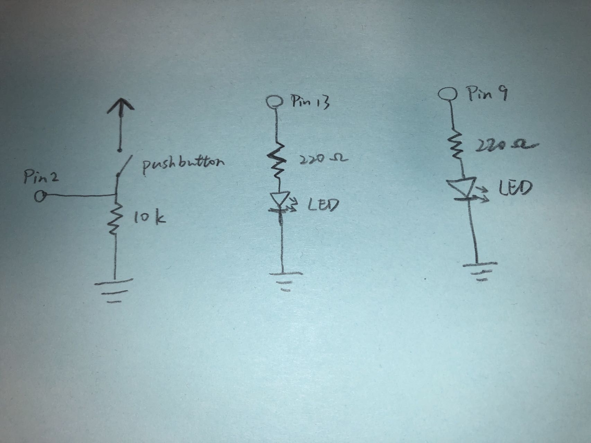
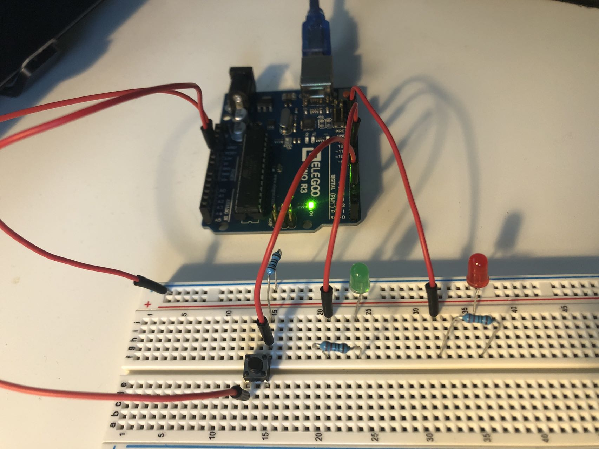

Fade!

A pushbutton is connected between power and ground, along with port and a 10kΩ resistor.
Two LEDs are connected between port and ground, along with two 220Ω resistor to protect from excessive current.
The pushbutton controls the status of two LEDs.
V = I * R
5V - 1.8V = 20mA * R
3.2V = 0.02A * R
R = 160Ω
Therefore, resistance cannot be smaller than 160Ω. 220Ω resistor works fine!

The circuit is from Pin 2, 13, 9, and 5V power to ground, with a pushbutton, LEDs, and resistors in between.

A GIF showing the operation of the circuit!
The code that makes this work:
/*
Fade!
-- Press and hold the button to make the red LED blink, and increase the brightness of the green LED.
-- Release the button to stop the red LED from blinking, and decrease the brightness of the green LED.
*/
const int buttonPin = 2; // Initialize the port of button
const int ledPin = 13; // Initialize the port of red LED
const int fadePin = 9; // Initialize the port of green LED
int brightness = 0; // Initialize the brightness
int fadeAmount = 5; // Set the amount of change in brightness
int buttonState = 0; // Initialize the state of button
void setup() {
// Set three ports as output
pinMode(ledPin, OUTPUT);
pinMode(buttonPin, OUTPUT);
pinMode(fadePin, OUTPUT);
}
void loop() {
buttonState = digitalRead(buttonPin); // Read and record the state of the button
if (buttonState == HIGH) { // If the button is pressed
for (int i = 1; i <= fadeAmount; i ++) { // repeat the following for "fadeAmount" times
digitalWrite(ledPin, HIGH); // Red LED on
delay(100); // delay for 0.1 seconds
digitalWrite(ledPin, LOW); // Red LED off
delay(100); // delay for 0.1 seconds
}
while (buttonState == HIGH) { // As long as the button is still pressed
analogWrite(fadePin, brightness); // Light up the green LED to the current brightness
brightness = brightness + fadeAmount; // Increase the brightness by the change amount
delay(30); // delay for 0.03 seconds
buttonState = digitalRead(buttonPin); // Update the state of the button
}
} else { // If the button is released
digitalWrite(ledPin, LOW); // Red LED off
while (brightness > 0) { // As long as the green LED is still lighted
brightness = brightness - fadeAmount; // Decrease the brightness by the change amount
analogWrite(fadePin, brightness); // Light up the green LED to the current brightness
delay(30); // delay for 0.03 seconds
}
}
}